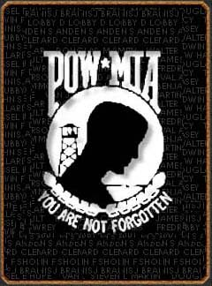

Last Flight
Skull Platoon boarding the Chinook before the crash
Honor Roll
May 10, 2020 Remembrance at the 50 year anniversary
of the 34 lost in a Chinook Crash, 10May72..
https://neverforgotten34.weebly.com/
If you have questions email:
Jim Garvin
james.garvin47@yahoo.com
D 2/8 Honor Roll The Vietnam Veterans Memorial
Skull 71-72 Chopper Crash
Last Flight
Skull Platoon boarding the Chinook before the crash
 | 64-13157 was the tail number for the Chinook that crashed on May 10, 1972 , when 34 soldiers died. 5 were crew members of the Chinook from the 362nd Aviation Company, 21 were members of Skull platoon, including 3 from CP: Skipper, and both the company and battalion RTO's. 7 soldiers were from A Company, 1/12th Cav, and 1 trooper was from the 11th ARM Cav Regiment. United 157 was part of a flight of four Chinooks that picked up infantry troops from the 3d Bde, 1st Cav at the Sandy Pad at Bien Hoa Army Base. The troops were being taken to Vung Tau for a three day incountry R&R. As 157 neared Long Thanh North airfield, other Chinooks in the flight described 157 as exploding like a lightbulb flash. Since there had been an increase in NVA activity at An Loc, the aircraft was thought to have been shot down. The remaining CH-47's sped from the area. It was learned later that the Chinook had a material failure of a blade retaining pin. 5 crewmen and 29 soldiers were lost.
|